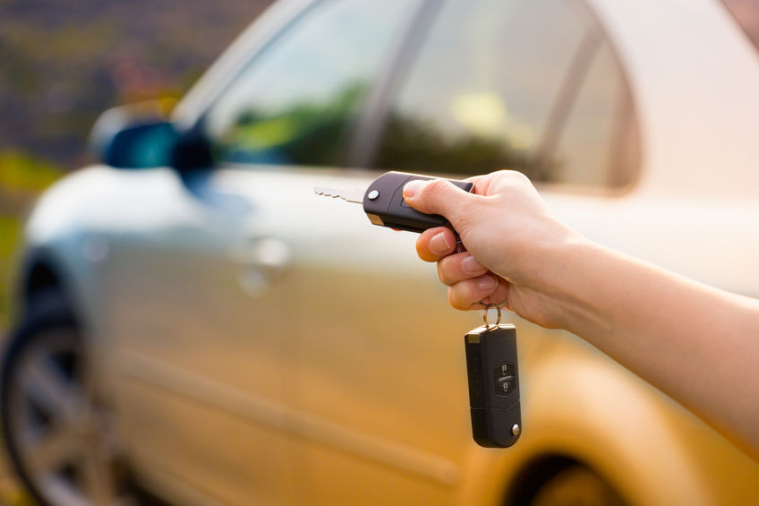

Zatrzaśnięte kluczyki w samochodzie to sytuacja, która potrafi zrujnować cały dzień — zwłaszcza gdy spieszysz się do pracy, masz ważne spotkanie lub stoisz na parkingu z zakupami w ręku. Na szczęście nie musisz wywoływać lawety ani wybijać szyby.
Jako ślusarz samochodowy w Lublinie z ponad 20-letnim doświadczeniem, specjalizuję się w bezinwazyjnym otwieraniu samochodów. Korzystam ze specjalistycznych narzędzi, które pozwalają mi otworzyć auto bez rysowania lakieru, bez uszkadzania zamka i bez naruszania uszczelek.
Jakie samochody otwieram?
Otwieram samochody wszystkich marek i modeli — zarówno popularne, jak i premium:
- Marki popularne: Volkswagen, Toyota, Opel, Ford, Renault, Fiat, Skoda, Hyundai, Kia, Peugeot, Citroën, Dacia
- Marki premium: BMW, Audi, Mercedes-Benz, Volvo, Lexus, Jaguar, Land Rover
- Samochody dostawcze: VW Transporter, Ford Transit, Renault Master, Citroën Jumper, Iveco Daily
- Samochody starsze: również pojazdy z mniej popularnymi typami zamków
Kiedy potrzebny jest ślusarz samochodowy?
Najczęstsze sytuacje, w których klienci dzwonią po moją pomoc:
- Zatrzaśnięte kluczyki w aucie — klasyczna sytuacja, zwłaszcza przy załadunku bagażnika lub szybkim wyjściu z samochodu
- Zgubione klucze do samochodu — na zakupach, na spacerze, w pracy
- Zablokowany zamek centralny — np. po wyczerpaniu akumulatora w pilocie
- Złamany klucz w stacyjce lub zamku drzwi — wymaga delikatnego usunięcia odłamanego fragmentu
- Zamrożony zamek zimą — zamarznięty mechanizm, który nie daje się obrócić
Jak wygląda otwieranie samochodu?
Proces jest szybki, bezpieczny i całkowicie bezinwazyjny:
- Kontakt telefoniczny — opisujesz sytuację i podajesz markę/model samochodu. Podaję orientacyjny koszt i czas dojazdu.
- Dojazd w 20-40 minut — jestem na miejscu szybko, niezależnie od lokalizacji w Lublinie.
- Weryfikacja własności — dla bezpieczeństwa mogę poprosić o dowód rejestracyjny lub inny dokument potwierdzający własność pojazdu.
- Bezinwazyjne otwarcie — używam profesjonalnych narzędzi dobranych do konkretnego modelu. Bez rys, bez uszkodzeń.
- Gotowe! — masz ponowny dostęp do swojego samochodu w ciągu kilku minut.
Bezpieczeństwo i profesjonalizm
Zależy mi na tym, aby każda interwencja była przeprowadzona profesjonalnie i bezpiecznie. Dlatego:
- Przed otwarciem samochodu mogę poprosić o potwierdzenie tożsamości i prawa do pojazdu
- Używam wyłącznie narzędzi profesjonalnych, które nie niszczą lakieru ani mechanizmu zamka
- Metoda otwarcia dobierana jest indywidualnie do modelu — inaczej otwiera się VW Golfa, a inaczej BMW serii 5
Ile kosztuje otwieranie samochodu w Lublinie?
Cena zależy przede wszystkim od marki i modelu samochodu oraz stopnia skomplikowania zabezpieczeń. Orientacyjna cena zaczyna się od 100-200 zł. Dokładną wycenę podaję telefonicznie przed przyjazdem — bez ukrytych kosztów.
Działam na terenie całego Lublina
Dojeżdżam do samochodów na parkingach, pod marketami, na osiedlach, przy biurowcach — wszędzie tam, gdzie potrzebujesz pomocy. Obsługuję cały Lublin oraz okolice: Świdnik, Lubartów, Łęczna, Puławy, Kraśnik.